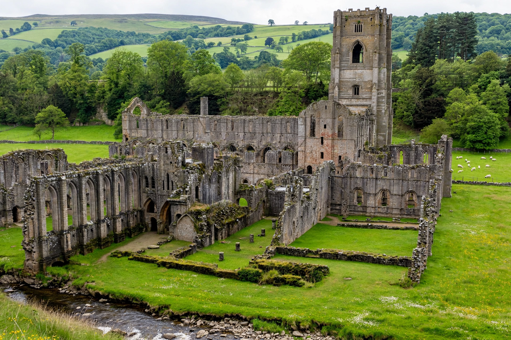

The Dissolution of the Monasteries, sometimes referred to as the Suppression of the Monasteries, was the set of administrative and legal processes between 1536 and 1541 by which Henry VIII disbanded religious houses in England, Wales and Ireland, appropriated their income, disposed of their assets, and provided for their former personnel. It was a central act of the English Reformation.
At the time of the dissolution there were over 800 religious houses in England and Wales, housing some 7,500–10,000 monks, nuns and friars and controlling perhaps a quarter of the cultivated land. Monastic wealth had long attracted criticism, and precedents for suppression existed: Cardinal Wolsey had dissolved smaller houses in the 1520s to fund his colleges. Henry's need was fiscal as much as religious — the break with Rome and wars against France and Scotland strained the Crown's finances.
In 1535 Thomas Cromwell, acting as the king's vicegerent in spirituals, ordered a general valuation of church wealth, the Valor Ecclesiasticus, and a visitation of the monasteries by commissioners including Richard Layton and Thomas Legh. Their reports — collected in the Compendium Compertorum — alleged widespread corruption and immorality, providing the justification for suppression.
The first Act of Suppression (1536) dissolved houses with incomes under £200 a year; heads received pensions and many smaller houses closed, though some bought reprieves. Resistance in the north helped provoke the Pilgrimage of Grace (1536), the largest Tudor rebellion, after which the greater houses came under intense pressure to surrender "voluntarily". The second Act (1539) ratified the surrenders. By March 1540 the last house, Waltham Abbey, had closed.
Proceeds were administered by the Court of Augmentations. Land was sold or granted to courtiers and gentry — much of it at knock-down prices — redistributing wealth on a vast scale and creating a class with a vested interest in the Reformation settlement. Lead was stripped, bells melted, libraries dispersed and buildings quarried; ruins such as Rievaulx, Fountains and Tintern became icons of the English landscape. The dissolution ended monastic charity, hospitality and pilgrimage culture, and drove the shrines' destruction — including that of Thomas Becket at Canterbury, whose seat belonged to the Archbishop of Canterbury. Displaced religious mostly received pensions; some abbots who resisted, including those of Glastonbury, Reading and Colchester, were executed.